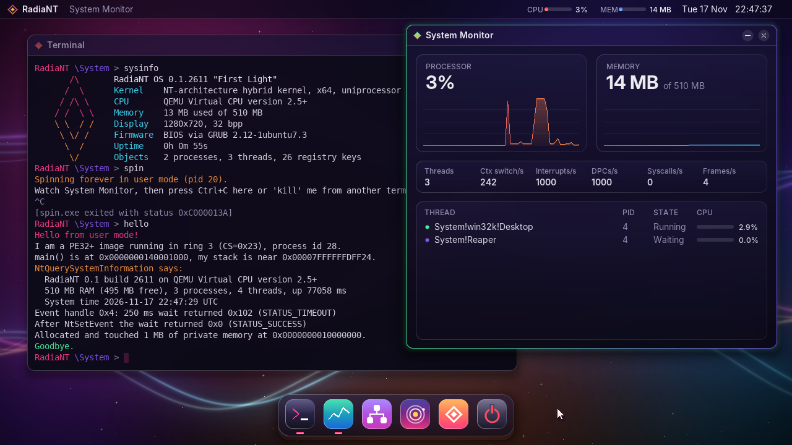

Preemptive multitasking
32 priority levels, round-robin quanta and a 1 kHz clock. An infinite loop in user mode leaves the desktop perfectly responsive.
A 64-bit operating system built from scratch on the NT kernel architecture.
A hybrid kernel with a HAL, IRQLs, an object manager, PE32+ user mode and a software-composited glass desktop — about 7,000 lines of C and assembly that boot from a 5 MB ISO.

What it is
RadiaNT is a hobby operating system for 64-bit PCs. Its kernel is not Windows and contains no Windows code — it is written from scratch, but it is organised the way the Windows NT kernel is.
That means a hardware abstraction layer underneath a small kernel, and above that an executive of cooperating managers: objects, processes, memory, I/O and configuration. Interrupts are ranked by IRQL and deferred through DPCs. Everything the kernel owns is a typed, reference-counted object in a namespace that starts at \. Programs are PE32+ executables that enter the kernel with SYSCALL through a service table — the same register protocol NT uses on x64.
On top sits a window manager that composites frosted-glass windows in software, with no GPU and no floating point.
Architecture
Pick a component to see what it does and where it lives in the source tree.
Under the glass
32 priority levels, round-robin quanta and a 1 kHz clock. An infinite loop in user mode leaves the desktop perfectly responsive.
Interrupt service routines do the minimum and queue a deferred procedure call. The dispatcher database is only ever touched at DISPATCH_LEVEL.
Processes, threads, events, devices and drivers are typed objects with reference counts, living under \Device, \Driver, \ObjectTypes… Handles are multiples of four.
Four-level paging, a higher-half kernel, a physical map, per-process address spaces with NX, and a tagged pool allocator you can inspect with pool.
User programs are genuine Portable Executables built with clang and lld-link, mapped section by section and isolated from the kernel. A wild pointer kills the process, not the machine.
When the kernel itself faults it stops with a STOP code, four parameters and a register dump — on screen and over the serial port. Type bugcheck to see one.
Frosted glass, soft shadows, anti-aliased rounded corners and alpha-blended text, composited per damaged rectangle by a single kernel thread. No GPU required.
Driver objects, device objects and IRPs. The window manager reads the keyboard and mouse by sending IRP_MJ_READ to \Device\KeyboardClass0.
A configuration manager with an in-memory hive: hardware description, version information and services under \Registry\Machine. Browse it with reg.
Screenshots
Unretouched framebuffer captures from the ISO on this page, running in QEMU at 1280×720.
Try it here
This is a simulation running in your browser, replaying what the real Terminal prints. Type a command or tap one below.
Run it
The ISO is a hybrid image: attach it to a virtual machine as a CD, or write it to a USB stick. Nothing is installed and nothing on your disks is touched — RadiaNT has no disk driver.
Recommended, and the configuration RadiaNT is tested on.
qemu-system-x86_64 -m 512 -cdrom radiant-x64.iso
Add hardware acceleration, or boot through UEFI firmware instead of BIOS:
# Linux with KVM qemu-system-x86_64 -enable-kvm -m 512 -cdrom radiant-x64.iso # UEFI (path to OVMF varies by distribution) qemu-system-x86_64 -m 512 -cdrom radiant-x64.iso -bios /usr/share/ovmf/OVMF.fd # watch the kernel debug log qemu-system-x86_64 -m 512 -cdrom radiant-x64.iso -serial stdio
Click inside the window to capture the mouse; Ctrl+Alt+G releases it.
radiant-x64.iso to the optical drive.Not yet verified on VirtualBox. RadiaNT only has a PS/2 input driver, so a USB tablet pointing device will not work.
radiant-x64.iso and enable Connect at power on.Not yet verified on VMware.
Write the image to a spare USB stick (this erases the stick), then boot a PC from it.
# Linux / macOS — replace sdX with the stick, not your disk
sudo dd if=radiant-x64.iso of=/dev/sdX bs=4M status=progress conv=fsyncOn Windows use Rufus in DD image mode, or balenaEtcher.
Experimental: real hardware is untested. The firmware must provide a 32-bit linear framebuffer and PS/2 (or USB legacy) keyboard and mouse emulation. There is no USB, disk or network driver.
sysinfo, ps, mem, pool — look inside the kernelobj \, drivers, reg — walk the object namespace and registryhello, primes, clock — run PE32+ programs in ring 3crash — watch a process get killed for touching kernel memoryspin, then open System Monitor — preemption at workThe whole system builds in a few seconds on Linux with GCC, NASM, clang + lld (for the PE user programs) and GRUB's grub-mkrescue.
sudo apt install build-essential nasm clang lld xorriso mtools \
grub-pc-bin grub-efi-amd64-bin grub-common qemu-system-x86
git clone https://github.com/Desyncccc/claude_os && cd claude_os
make # build/radiant-x64.iso
make run # boot it in QEMUDownload
One bootable ISO for 64-bit PCs and virtual machines. Free and open source under the MIT licence.